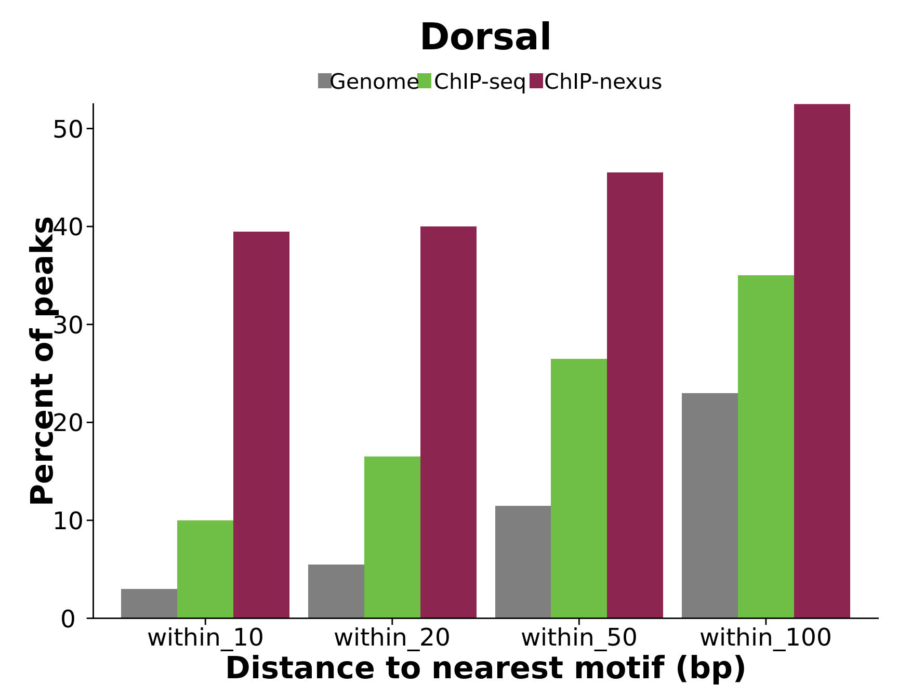
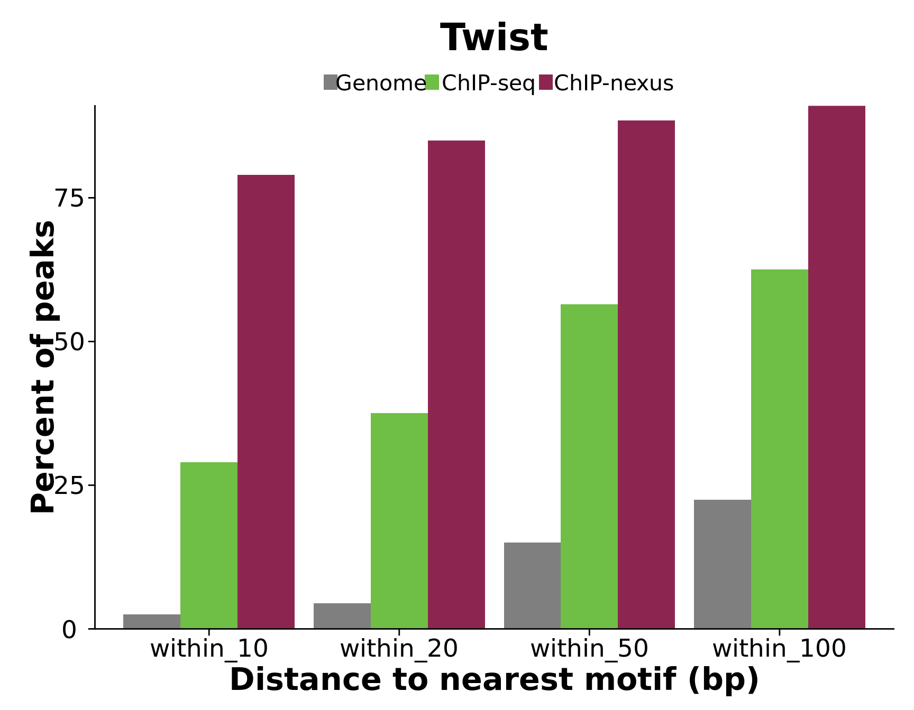

Figure 2D and 2E: ChIP-seq vs ChIP-nexus motif specificity
Project: ChIP-nexus methods paper
Author: Jeff Johnston
Generated: Thu Dec 04 2014, 03:17 PM
Overview
Using top 200 peaks
Dorsal


| variable | test | pvalue |
|---|---|---|
| within_10 | ChIP-nexus different than ChIP-seq | 1.819587649606e-11 |
| within_20 | ChIP-nexus different than ChIP-seq | 3.24438312032412e-07 |
| within_50 | ChIP-nexus different than ChIP-seq | 0.000116124473545087 |
| within_100 | ChIP-nexus different than ChIP-seq | 0.000610563567508063 |
Twist


| variable | test | pvalue |
|---|---|---|
| within_10 | ChIP-nexus different than ChIP-seq | 3.02640597380651e-23 |
| within_20 | ChIP-nexus different than ChIP-seq | 5.04322830976282e-22 |
| within_50 | ChIP-nexus different than ChIP-seq | 1.73041130740358e-12 |
| within_100 | ChIP-nexus different than ChIP-seq | 3.39392177873909e-11 |
Session information
For reproducibility, this analysis was performed with the following R/Bioconductor session:
R version 3.1.1 (2014-07-10)
Platform: x86_64-pc-linux-gnu (64-bit)
locale:
[1] LC_CTYPE=en_US.UTF-8 LC_NUMERIC=C
[3] LC_TIME=en_US.UTF-8 LC_COLLATE=en_US.UTF-8
[5] LC_MONETARY=en_US.UTF-8 LC_MESSAGES=en_US.UTF-8
[7] LC_PAPER=en_US.UTF-8 LC_NAME=C
[9] LC_ADDRESS=C LC_TELEPHONE=C
[11] LC_MEASUREMENT=en_US.UTF-8 LC_IDENTIFICATION=C
attached base packages:
[1] grid stats4 parallel stats graphics grDevices utils
[8] datasets methods base
other attached packages:
[1] lattice_0.20-29 digest_0.6.4
[3] yaml_2.1.13 dplyr_0.3.0.2
[5] colorspace_1.2-4 reshape2_1.4
[7] ggplot2_1.0.0 BSgenome.Dmelanogaster.UCSC.dm3_1.4.0
[9] BSgenome_1.34.0 rtracklayer_1.26.1
[11] Biostrings_2.34.0 XVector_0.6.0
[13] GenomicRanges_1.18.1 GenomeInfoDb_1.2.0
[15] IRanges_2.0.0 S4Vectors_0.4.0
[17] BiocGenerics_0.12.0 xtable_1.7-4
loaded via a namespace (and not attached):
[1] assertthat_0.1 base64enc_0.1-2 BatchJobs_1.4
[4] BBmisc_1.7 BiocParallel_1.0.0 bitops_1.0-6
[7] brew_1.0-6 checkmate_1.5.0 codetools_0.2-9
[10] DBI_0.3.1 evaluate_0.5.5 fail_1.2
[13] foreach_1.4.2 formatR_1.0 GenomicAlignments_1.2.0
[16] gtable_0.1.2 htmltools_0.2.6 iterators_1.0.7
[19] knitr_1.7 labeling_0.3 lazyeval_0.1.9
[22] magrittr_1.0.1 MASS_7.3-35 munsell_0.4.2
[25] plyr_1.8.1 proto_0.3-10 Rcpp_0.11.3
[28] RCurl_1.95-4.3 rmarkdown_0.3.3 Rsamtools_1.18.0
[31] RSQLite_0.11.4 scales_0.2.4 sendmailR_1.2-1
[34] stringr_0.6.2 tools_3.1.1 XML_3.98-1.1
[37] zlibbioc_1.12.0